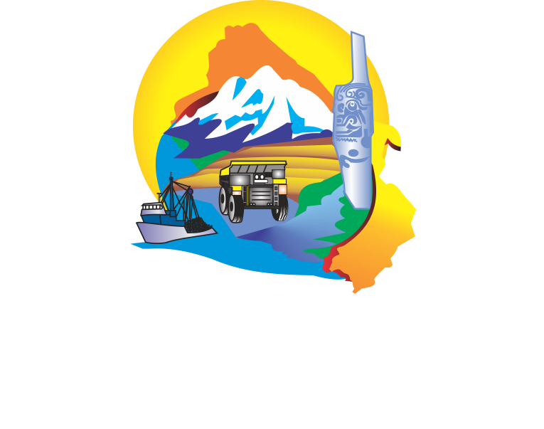

Adaptamos el visor a lo que necesitas encontrar. Puedes cambiar de perfil en cualquier momento.
Toda la información ambiental está disponible para cualquier perfil; lo que cambia es cómo te la presentamos.
Te podemos mostrar en un minuto cómo consultar información ambiental de cualquier cuenca, provincia o distrito de Áncash.
Puedes reabrir el recorrido cuando quieras con el botón del mapa.